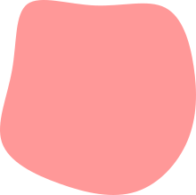

Portfolio
web designer / developer
TANAKA FUKA
1994年生まれ、広島県育ち。大学では国際学部で学びました。
新卒でIT系の営業職に就くが、エンジニアの方と一緒に働くうちにクリエイティブ業に興味を持ち、
アルバイトを経て現在に至ります。
01仕様を超えてご提案
単にお客様のご要望に応えるだけでなく、改善ポイントがあれば積極的に提案いたします。
「ここも直した方がいいのでは」と一歩踏み込む姿勢で、一緒により良い制作物を目指します。

02読まれるコードを書く
動けばいいではなく、読みやすく、そして変更しやすいコードを意識します。
命名・js実装など、長期運用や保守性を見据えた実装を心がけています。
03課題発見＆仕組み化
開発フローや作業効率に課題を感じたとき、放置せず改善策を検討・提案してきました。
AIを活用したレビュー効率化など、再現性のある仕組みづくりを意識して取り組んでいます。
SKILLS・TOOLS
不動産・住宅情報サイトのフロント実装を担当
ユーザーの反響を増やすことをゴールに画面UI / UXのブラッシュアップを行なっています。私は主にhtml / scss / jQueryを使ったコーディングをメイン業務としています。最近はAIを用いてより効率的な実装を検討することも増えてきました。加えて実装だけでなく、見積もりの算出やメンバーのマネジメント、また時としてディレクションにも関わります。
EC運営支援の制作部門でディレクター & コーディングを担当
お客様のEC店舗（楽天・yahoo・makeshopなど）に必要なセールLPやバナー、その他ヘッダーやフッターといったパーツの制作に関わりました。この頃からお客様の要望の実現だけでなく、より閲覧しやすい店舗や売上UPにつながることを意識して提案をしてきました。また対お客様だけでなく、社内での業務改善を積極的に検討し、日々の業務を円滑に進めることも心がけました。
新卒で営業職に就くが、クリエイティブ職への興味から業種転換
SaaS販売の新規開拓営業に就きましたが、エンジニアの方と働いていたこともあって徐々に制作への興味が出てきました。そんな中でオンラインのWebデザインスクールを受講してみたところ自分に合っていそうな手応えを感じたため、スクールで制作したポートフォリオをもとにクリエイティブ業界へ転職することにしました。